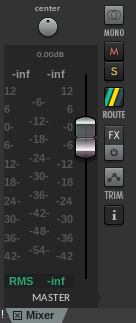

MEDIAART 2G03: Practice #5
Practice #5: normalize and render completed digital audio projects in appropriate delivery formats
Goal: normalize a DAW project to -0.3 dBFS without using intermediate files
Purpose: Normalizing audio projects without intermediate files ensures that when we render projects we are using all of the possibility for detail that the output format has, and is a key requirement for submitting complete works of sound art in this course.
Specifications: You will receive credit for a tutorial/practice submission in this folder that meets ALL of the following specifications (more detailed instructions are found below):
- The submission contains a ZIP archive containing ONLY a rendered WAV file (not source files, not a Reaper project folder or file)
- The WAV file has a peak amplitude of exactly -0.3 dBFS
In most cases, the most efficient way to complete this will be during your assigned tutorial section. Don't hesitate to ask the instructor or teaching assistant for help if anything is unclear to you - but also don't hesitate to explore the software, try things out, and teach yourself!
Demonstration: Here is a video demonstration of the technique discussed below.
Detailed instructions: Normalizing without intermediate files
A key skill for finishing or finalizing our creative projects is ensuring that the peak sample (audio level) is at -0.3 dBFS, BEFORE rendering any digital audio file from the project. Each stage of rendering introduces a small amount of digital noise, so if we can control peak levels without introducing that digital noise, so much the better. To follow these instructions, you'll need some kind of Reaper project: you could either (a) make a renamed copy of another Reaper project from an earlier area of technical practice, or (b) quickly create a fake project by creating a new project, importing some sources and doing some random things to them.
- Once you have a complete "fake" project to work with, you can start the normalizing procedure, which is something you would do only when you are ready to render and submit a real project. Make sure that you can see the Master fader in Reaper's mixer (hint: it says Master on it). The peak level meters ("historical peak levels meters") are the ones in the image that say "-inf" in the image below (of course, they may something different at the moment in your Reaper project window). Click on them to reset them.

After you reset it will say -inf (for "infinite") in both channels. Now press play and let the whole project run through while watching that peak level measurement on the Master output. Let the playback of the sound complete - what is the final peak reading in dBFS when the playback has completed? (These metres show the highest sample level since the last time they were reset.)
- Now we want to adjust the project so that the peak sample (the highest output level to occur anywhere in the project, as monitored by you and as, eventually, rendered to a new file) is at exactly -0.3 dBFS. Why would we want to do this? There are two considerations that interact to motivate this particular standard: (1) We want the desired signals in our rendered file to be very far away from the digital noise floor, and -0.3 dBFS is very close to the maximum possible amplitude and so very close to as far away as we can get; (2) at the same time, we want it to be clear to anyone who finds this file that there was no clipping as the file was produced/rendered, and -0.3 dBFS is just below the point at which we might suspect clipping.
So.... The next step is to answer the question: What is the difference between your peak reading from the previous question and -0.3 dBFS? i.e. how much extra gain (in dB) will we need?
A few examples - if the highest peak (of the 2 channels, left and right) on your peak meter was:
- -6 dBFS: you would need +5.7 dB of gain to bring that up to -0.3 dBFS
- -2 dBFS: you would need +1.3 dB of gain to bring that up to -0.3 dBFS
- -4.5 dBFS: you would need +4.2 dB of gain to bring that up to -0.3 dBFS
- -21 dBFS: you would need +20.7 dB of gain to bring that up to -0.3 dBFS
- +3 dBFS: you would need -3.3 dB of gain to bring that down to -0.3 dBFS
You can apply this extra digital amplification to your project in two ways.
(1) If the total amount of gain required is less than 12 dB you can apply it by moving the Master fader up/down by the required amount of gain. However this method can be quite awkward with the small sliders on the screen, so you may prefer the next, more general, method...
(2) If the amount of gain required is more than 12 dB - or even if it isn't - you can apply a specific amount of gain by clicking where it says "Routing" above the Master fader, and then entering a value in the upper left of the window that pops up (where the label "dB" appears).
IMPORTANT: To add a specific amount of gain you have to CHANGE the gain that is already applied BY THAT MUCH. For example, if the master gain is already at +3.0 dB, and you need it to be 1 db higher, you would change it to +4.0 dB (i.e. you would NOT set the master gain to +1 dB...).
You can test your work within Reaper by resetting the historical metre reading (click on it) and playing through again from the beginning. If you've done it right, you should see a peak of -0.3 dBFS this time. Don't hesitate to ask for help if you are having trouble achieving this result, or are unclear if you have achieved this result - this is an absolute requirement of the first project you will submit not too long from now, so do take advantage of the in-person tutorial environment to make sure you can do it!
Note: You can ALSO test your work by rendering in Reaper and selecting "Dry run" from the rendering dialogue. This method displays the peak levels to you relatively quickly, without listening through. Both methods (the one where you listen through and the one where you don't) are useful - in general, the method of listening through should always be applied as part of delivering a project, because it gives you an extra check that everything sounds as it should. Meanwhile, quickly getting a measurement of the peak with the "Dry run" functionality is useful when you are only fixing a problem with the peak sample.
- Export/render the resulting audio using Reaper's Render dialog (render "for real" that is). Note that Reaper's render process gives you some useful feedback about the peak levels. You wouldn't want that feedback to show levels above 0 dBFS!
That's it - but it does take some practice! Please don't hesitate to reach out to Dr. 0 or your teaching assistants for assistance (particularly during your in-person tutorials, which are certainly the most efficient place to practice this skill).
After rendering, please take a moment to verify that your practice submission meets ALL of the specifications at the top of this page, before uploading to a weekly submission folder on Avenue. Be sure to keep your Reaper complete project folder on a removable hard drive, USB key, or cloud folder (but don't submit it here on Avenue - just submit your ZIPped WAV file this time) in case you need to return to these materials for any reason.